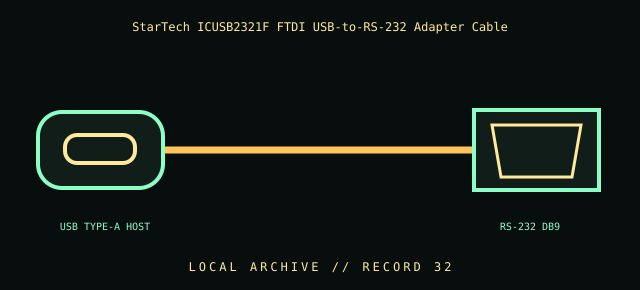

[ INDIVIDUAL COMPONENT // CABLES & ADAPTERS ]
StarTech ICUSB2321F FTDI USB-to-RS-232 Adapter Cable
StarTech.com ICUSB2321F 6 ft USB-to-RS-232 adapter cable. This entry identifies the documented model and does not claim that visually similar products share its pinout, protocol, capability, or host compatibility.

COMPATIBILITY WARNING: Verify the exact product model, host/device role, signal protocol, electrical requirements, and manual before connection. Connector fit alone does not prove compatibility.
Specifications
| Catalog subcategory | Serial and converter cables |
|---|---|
| Catalog identity | StarTech.com ICUSB2321F 6 ft USB-to-RS-232 adapter cable |
| Verified protocol / model information | StarTech identifies ICUSB2321F as a 6 ft (1.8 m) USB-to-RS-232 adapter with an FTDI chipset and COM-port retention. RS-232 is electrical signaling; USB is translated by active electronics, not passively wired through. |
| Connector ends | USB TYPE-A HOST → RS-232 DB9; diagram is schematic, not a pinout map. |
Physical & electrical compatibility
This output is RS-232, not 3.3 V/5 V TTL UART. Verify operating-system driver support, target connector/pinout, DTE/DCE role, and the device’s serial settings. Do not connect the DB9 RS-232 output to a logic-level UART header.
Archival & handling notes
Record adapter model, driver/OS, assigned COM port, and known-good device. Protect USB and DB9 connectors from side-load; preserve any driver/media information with the adapter.
Record provenance, condition, label photographs, exact full part number/revision, host system, and any test method/result. Preserve packaging and source documents with the cable when available.
Manufacturer & standards references
- StarTech — ICUSB2321F USB-to-RS-232 FTDI adapterManufacturer model, FTDI adapter family, cable length, and COM-port retention.
- TIA — TIA-232 interface standardsStandards body reference for RS-232/TIA-232 electrical serial signaling.
Manufacturer documentation applies to the cited model; standards references describe the protocol family. Where product revisions or device support vary, the exact manufacturer manual and host documentation take precedence.